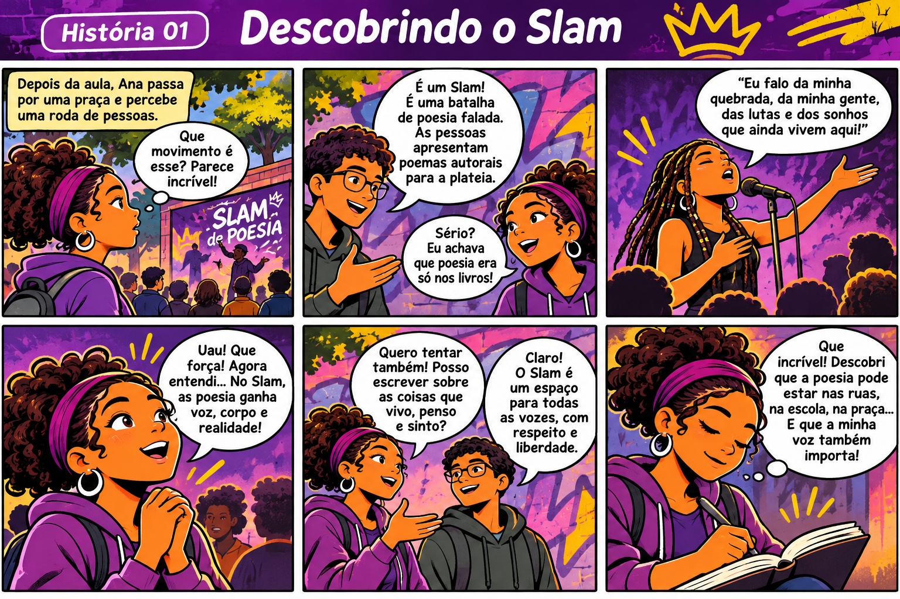
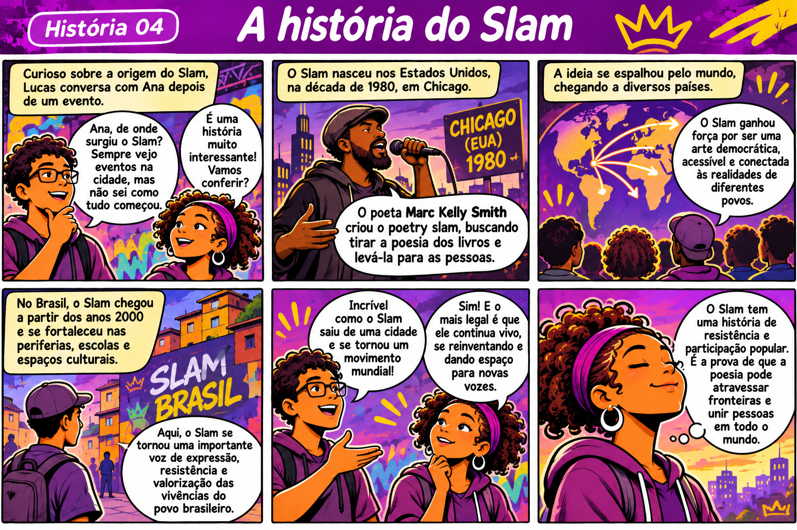

Leitura aprofundada
Explore a história do Slam, suas características, sua chegada ao Brasil e seu papel na cultura.
Descubra como palavras, ritmo e presença transformam espaços públicos em encontros de arte e participação.
Escolha a maneira mais confortável para aprender.
Explore a história do Slam, suas características, sua chegada ao Brasil e seu papel na cultura.
Aprenda com cenas visuais, explicações curtas e narração em voz alta, no seu próprio ritmo.
Conheça a história da poesia falada, sua força como expressão artística e seu papel na transformação da sociedade.
O Slam, também conhecido como poetry slam, é uma manifestação artística que reúne poesia, oralidade, interpretação e participação coletiva.
Diferentemente da poesia destinada exclusivamente à leitura, o Slam valoriza a apresentação diante de um público. A voz, os gestos, as pausas e as expressões corporais ajudam a construir o significado dos poemas.
Os participantes, conhecidos como slammers, apresentam textos de sua própria autoria. Suas poesias podem abordar experiências pessoais, sentimentos, identidade, relações humanas, desigualdades, sonhos e diferentes aspectos da sociedade.
Embora geralmente organizado como uma competição, o Slam também funciona como espaço de convivência, criatividade, escuta e compartilhamento de experiências.

O Slam não exige que todas as poesias tenham rimas. O importante é a criação autoral e a maneira como o texto é apresentado e compartilhado.
Uma batalha de Slam reúne poetas que apresentam suas criações diante de uma plateia. Os regulamentos podem variar conforme o evento, mas alguns princípios são comuns.
O poema deve ser criado pelo próprio participante.
Em muitos eventos, cada apresentação possui um limite de três minutos.
A apresentação normalmente utiliza a voz e o corpo, sem acompanhamento musical ou adereços cênicos.
Pessoas escolhidas entre a plateia atribuem notas às apresentações.
A plateia não é apenas observadora. Suas reações, sua escuta e sua participação contribuem para a atmosfera do encontro. Em muitas batalhas, integrantes do próprio público são convidados a avaliar os poemas.
A competição oferece uma estrutura para o evento, mas a experiência cultural não se resume à vitória ou à pontuação.
A poesia oral existe há milhares de anos em diferentes culturas. Entretanto, o formato competitivo contemporâneo conhecido como poetry slam desenvolveu-se nos Estados Unidos durante a década de 1980.
O poeta Marc Kelly Smith buscava tornar os encontros de poesia mais dinâmicos e próximos do público, questionando a ideia de que a literatura deveria estar restrita a determinados espaços sociais.
Marc Kelly Smith organiza encontros de poesia em Chicago.
O Green Mill, em Chicago, torna-se um importante marco do desenvolvimento das batalhas de poesia.
O formato se espalha por diferentes países, incorporando características culturais de cada comunidade.
Surge o ZAP! Slam, em São Paulo, inaugurando uma nova etapa da poesia falada no Brasil.
O Slam da Guilhermina fortalece as batalhas em espaços públicos da Zona Leste de São Paulo.
Em 2008, a artista e pesquisadora Roberta Estrela D’Alva, juntamente com o coletivo Núcleo Bartolomeu de Depoimentos, organizou o primeiro Slam brasileiro.
O evento recebeu o nome de ZAP! — Zona Autônoma da Palavra — e tornou-se uma referência para a expansão do movimento no país.
A poesia falada encontrou no Brasil um ambiente de diálogo com a cultura hip-hop, os saraus, a literatura periférica e diversas tradições de expressão oral.
Artista, poeta e pesquisadora pioneira na introdução do Poetry Slam no Brasil.
Primeira batalha brasileira, organizada em São Paulo no ano de 2008.
Movimento iniciado em 2012, com forte presença nos espaços públicos da periferia paulistana.
Coletivo que relaciona poesia, participação cidadã e reflexão sobre questões sociais.

O Slam contribui para ampliar o acesso à cultura e à produção literária. Ao ocupar espaços públicos e comunitários, pode aproximar a poesia de pessoas que não frequentam ambientes culturais tradicionais.
A poesia autoral permite que pessoas compartilhem suas próprias experiências, valorizando suas histórias, identidades, comunidades e diferentes perspectivas sobre o mundo.
Muitos poemas abordam questões como racismo, machismo, desigualdade econômica, violência, preconceito e exclusão social. Essas apresentações podem estimular debates e incentivar a reflexão crítica.
O Slam também acolhe poemas sobre amor, humor, amizade, natureza, memória, descobertas e sonhos. Não existe uma obrigação de abordar questões políticas ou denunciar injustiças.
Conhecer realidades diferentes da nossa pode favorecer a empatia e a compreensão. Para isso, é fundamental respeitar quem apresenta e valorizar a diversidade das experiências humanas.
A poesia não resolve sozinha os problemas da sociedade, mas pode contribuir para dar visibilidade a experiências, questionar preconceitos e incentivar mudanças.
Essas manifestações compartilham elementos como criatividade, expressão oral e cultura urbana, mas possuem características próprias.
Apresentação de poemas autorais, geralmente preparados anteriormente e declamados sem acompanhamento musical.
Manifestação musical que utiliza versos ritmados, interpretação vocal e, frequentemente, batidas instrumentais.
Disputa artística que frequentemente envolve improvisação, criatividade verbal e respostas entre participantes.
Essas características não são fronteiras absolutas. Artistas podem transitar entre diferentes linguagens e combinar suas influências criativas.
A criação de um poema começa com uma ideia, um sentimento, uma observação ou uma experiência que o autor deseja compartilhar.
A organização dos sons, palavras e pausas durante a apresentação.
O uso de imagens e sentidos figurados para expressar ideias.
Repetir palavras ou versos para reforçar uma mensagem.
Variar a intensidade e a expressão da voz para transmitir sentimentos.
Minha voz não cabe no silêncio,
nem meus sonhos numa gaveta.
Cada palavra que eu escrevo
pode abrir uma porta secreta.
Se o mundo não escuta minha história,
eu faço da palavra um caminho.
Porque quando uma voz encontra outra,
ninguém precisa falar sozinho.
Nesse exemplo, a voz representa a expressão pessoal. A porta e o caminho funcionam como metáforas de oportunidades e possibilidades de comunicação.
No ambiente escolar, a poesia falada pode ser utilizada em atividades de Língua Portuguesa, Literatura, Artes, História e Ciências Humanas.
Sua prática pode estimular a escrita criativa, a interpretação de textos, a argumentação, a expressão oral e a reflexão sobre diferentes realidades.
A participação deve respeitar as necessidades de cada estudante. É possível adaptar o tempo das apresentações, utilizar Libras e outras formas de comunicação. Ninguém deve ser obrigado a expor experiências pessoais.
Não é necessário ser poeta profissional para começar a escrever. A poesia pode nascer de acontecimentos simples, lembranças, sentimentos e observações do cotidiano.
Você pode conhecer o movimento assistindo a apresentações, procurando coletivos culturais ou participando de atividades escolares e comunitárias.
Experimente escolher um assunto importante para você, escrever alguns versos e descobrir como deseja interpretá-los.
Transforme essa ideia em palavras. Sua história também merece espaço.
Consulte estas referências para aprofundar seus conhecimentos sobre a poesia falada.
Biografia do fundador do movimento Poetry Slam.
SYNERGIES BRÉSIL · 2011 Um microfone na mão e uma ideia na cabeça — o poetry slam entra em cenaArtigo de Roberta Estrela D’Alva sobre a trajetória do movimento.
SCIELO · ARTIGO ACADÊMICO Slam Resistência: poesia, cidadania e insurgênciaPesquisa sobre poesia falada e participação social.
UFRJ · REVISTA ACADÊMICA Vozes em LevanteEstudo sobre a voz, a performance poética e os espaços socioculturais do Slam.
CULTURA · LEITURA VISUAL
Avance pelas cenas no seu ritmo. Você pode ouvir a explicação quando quiser.